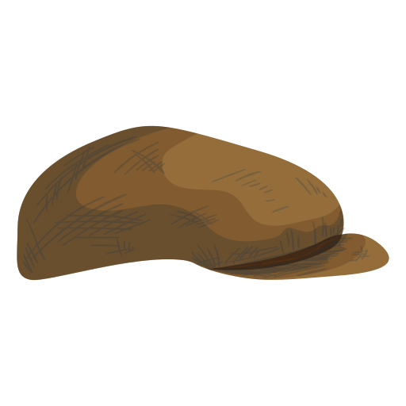

<mat-menu #menu="matMenu">
  <button mat-menu-item routerLink="/headlines">
    <mat-icon>chrome_reader_mode</mat-icon>
    <span>Headlines</span>
  </button>
  <button mat-menu-item routerLink="/likes">
    <mat-icon>favorites</mat-icon>
    <span>Likes</span>
  </button>
  <button mat-menu-item routerLink="/search">
    <mat-icon>search</mat-icon>
    <span>Search</span>
  </button>
</mat-menu>

<mat-toolbar color="primary">
  <button mat-icon-button [matMenuTriggerFor]="menu" aria-label="Menu">
    <mat-icon>more_vert</mat-icon>
  </button>
  <span class="padding-right">Newsies</span>
  
  <span class="fill-remaining-space"></span>
  <div *ngIf="!icon">
    <span class="padding-right" *ngIf="auth.user | async as user">Hello, {{ user.displayName }}</span>
    <button mat-raised-button aria-label="Log out" color="accent" *ngIf="auth.user | async as user" (click)="logout()">
      Log Out?
    </button>
  </div>

  <div *ngIf="icon">
    <button mat-icon-button [matMenuTriggerFor]="signOut" aria-label="Sign out Menu">
      
    </button>

    <mat-menu #signOut=matMenu>
      <button mat-menu-item *ngIf="auth.user | async as user" (click)="logout()">
        <mat-icon>power_settings_new</mat-icon>
        <span>Log Out?</span>
      </button>
    </mat-menu>
  </div>


</mat-toolbar>

